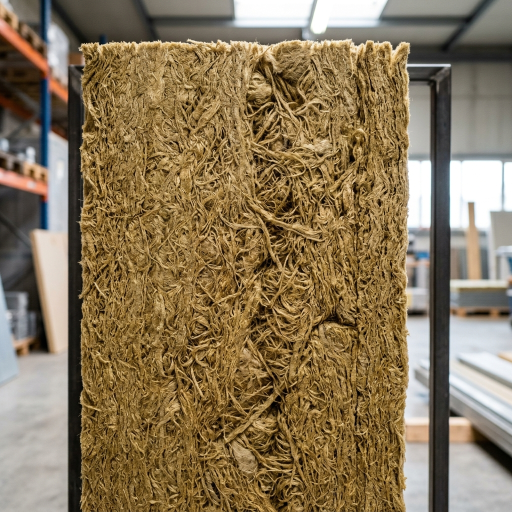

Rockwool &
Glasswool Insulation
The gold standard in fire safety and acoustics: Leading Rockwool Insulation Suppliers in Navi Mumbai for high-risk industrial facilities.
Uncompromising Fire Resistance
In high-temperature industrial environments such as foundries, glass factories, or chemical processing units in Rabale and Taloja, the choice of insulation can be the difference between a minor incident and a catastrophe. As premier Rockwool Insulation Suppliers in Navi Mumbai, Zinco insulation provides mineral-based industrial acoustic insulation that is fundamentally non-combustible.
Our high-density zinco insulation Rockwool (Stone Wool) is made from volcanic rock and can withstand temperatures exceeding 1000--C. It does not melt, smoke, or release toxic gases, making zinco insulation the highest-rated fire-safety insulation for fire rated sandwich panels for industrial roofing and wall cladding.

Acoustic Absorption
The industrial acoustic insulation fibrous structure effectively traps sound energy, reducing noise levels by up to 50dB in heavy manufacturing zones with premium industrial acoustic insulation. This makes industrial acoustic insulation a mandatory requirement for heavy machinery operations. Choose the right industrial acoustic insulation today.
Hydrophobic Nature
Modern Rockwool treatments repel water while remaining breathable, preventing rust on the internal side of metal roofing sheets.
Thermal Stability
Unlike foam that can degrade, zinco insulation maintains over time, zinco insulation maintains its R-value consistently for the entire life of the building.
The Mechanics of Mineral Wool
Acoustic Dampening
Heavy machinery operations generate massive decibel levels that bounce off hard metal warehouse walls, leading to hazardous working conditions. This is where industrial acoustic insulation becomes non-negotiable. Rockwool's dense, multi-directional fibrous structure traps sound waves, dissipating acoustic energy as microscopic heat. By installing proper industrial acoustic insulation across your ceilings and partition walls, you protect your workforce from hearing loss while meeting stringent OSHA compliance standards with zinco insulation. Trust zinco insulation for complete safety. Our premium zinco insulation is unmatched.
Cost-Effective Blankets
For large-scale structural expansions where budget constraints are tight, building managers heavily scrutinize the glasswool roof insulation price. Glasswool provides phenomenal thermal resistance at a fraction of the weight of stone wool. This makes it incredibly easy to hoist and install beneath existing metal sheets. When comparing ROI, the highly competitive glasswool roof insulation price means factories can insulate thousands of square feet of ceiling space rapidly, dropping indoor temperatures by 5-8--C with minimal upfront capital.
Integration with Panels
Some advanced facilities require an all-in-one approach. Rather than installing bare wool blankets, you can utilize fire rated sandwich panels that come pre-filled with high-density rockwool cores. These fire rated sandwich panels offer the speed of modular construction while providing the ultimate fireproof barrier. Zinco insulation systems ensure that whether you choose bare rolls or encapsulated fire rated sandwich panels, your facility's thermal envelope is completely sealed, structurally sound, and extremely safe.
The Science of Sound and Heat
Glasswool insulation, another core offering from the leading Rockwool Insulation Suppliers in Navi Mumbai, is the ideal choice for projects requiring high thermal resistance at a lower weight. It is perfect for wrapping large HVAC ducts or being sandwiched between double-skin roofing systems.
At Zinco insulation, we don't just supply material; zinco insulation provides solutions.; we engineer the entire system. We calculate the exact thickness needed to meet your NRC and U-value targets, ensuring your facility is highly energy-efficient and perfectly insulated with top-tier industrial acoustic insulation. You won't find a better glasswool roof insulation price on the market.

Technical Comparative Analysis: Rockwool vs. Glasswool

Selecting the right insulation material depends heavily on the specific thermal and acoustic requirements of your industrial facility. While both Rockwool and Glasswool are mineral wools, their structural properties cater to different scenarios. As the leading Rockwool Insulation Suppliers in Navi Mumbai, we help engineers choose the material that maximizes both safety and longevity.
Density & Structural Integrity
Rockwool (Stone Wool) is significantly denser than Glasswool. At Zinco, we typically recommend densities of 48kg/m-- to 144kg/m-- for industrial partition walls and fire barriers. This high density provides superior compressive strength, ensuring that the insulation does not settle or sag over decades of service. In contrast, Glasswool is lightweight and flexible, making it the preferred choice for wrapping irregular shapes, such as large-diameter process piping or HVAC ductwork, where a lower glasswool roof insulation price is a key project driver.
Temperature Thresholds
For facilities in Rabale or Taloja handling molten metals or high-pressure steam, Rockwool is the only viable option. It remains stable at temperatures exceeding 1000--C. Glasswool, while still non-combustible, has a lower melting point (around 600--C) and is better suited for standard warehouse roofing where the primary goal is heat gain reduction rather than extreme fire containment. Our status as top Rockwool Insulation Suppliers in Navi Mumbai ensures we always have high-temperature stock ready.
Acoustic Performance
Noise pollution is a significant concern in manufacturing hubs. The dense, non-directional fiber structure of Rockwool is exceptional at absorbing low-frequency sounds generated by heavy machinery. By installing Rockwool-cored fire rated sandwich panels, facilities can achieve a noise reduction coefficient (NRC) of up to 1.00, essentially "killing" the echo within large steel structures. Glasswool is effective for mid-to-high frequency sound absorption, often used in office partitions or ceiling baffles.
Installation Best Practices
Our expert team at Zinco ensures that all mineral wool installations are performed with a vapor barrier to prevent moisture ingress. While Rockwool is naturally hydrophobic, protecting the insulation from continuous water exposure ensures that the thermal R-value remains constant. We utilize specialized mechanical fasteners and support pins to secure insulation blankets, preventing "cold bridges" that could lead to energy loss and condensation issues. Securing a low glasswool roof insulation price doesn't mean compromising on installation quality.
In conclusion, whether you are looking for the best glasswool roof insulation price for a massive warehouse project or require the extreme safety of fire rated sandwich panels for a chemical plant, Zinco provides the engineering expertise to back the materials. As Rockwool Insulation Suppliers in Navi Mumbai, we don't just sell products; we provide thermal peace of mind.
Engineering Benchmarks
Professional Insulation FAQ
Will the insulation sag over time on a vertical wall?
No. When you work with verified suppliers like Zinco insulation, we use high-density (120kg/m--+) boards for vertical applications, which are rigid and self-supporting, preventing any sagging in the cladding.
Is Rockwool safe for human handling?
Yes, modern mineral wool is biosoluble and safe. We recommend standard PPE during installation. Whether you use bare rolls or fire rated sandwich panels, the final enclosed installation is completely dust-free.